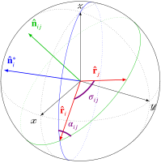

Spherical Functions
A key aspect of computing pixel-pixel covariance is calculating relative orientations of the two pixels on the sphere. The Sphere module implements a few basic spherical functions. For HEALPix-specific calculations, see the HEALPix Pixelization documentation instead.
Definitions
A colatitude-azimuth pair $(θ, ϕ)$ are coordinates on the sphere measuring the angular distance (in radians) from the North pole and east of the Prime Meridian, respectively. The coordinates will typically be normalized to the range $θ ∈ [0, π]$ and $ϕ ∈ [0, 2π)$.
A latitude-longitude pair $(δ, λ)$ are coordinates on the sphere measuring the angular distance (in degrees) north or south of the Equator and east or west of the Prime Meridian, respectively. The coordinates will typically be normalized to the range $δ ∈ [-90, 90]$ and $λ ∈ [-180, 180]$.
A Cartesian unit vector $\vec r$ centered at the origin of a sphere has its end-point at a location on the unit sphere. The coordinate system is right-handed, with the North Pole located at $\hat z = [0, 0, 1]$ and the intersection of the Prime Meridian and Equator located at $\hat x = [1, 0, 0]$.
In general, the function throughout the CMB package will take either colatitude-azimuth or unit vector coordinates.
Usage
Conversion between colatitude-azimuth pairs, latitude-longitude pairs, and unit vectors can be accomplished via the unexported functions Sphere.colataz, Sphere.latlon, and Sphere.cartvec.
julia> using CMB.Sphere
julia> using CMB.Sphere: colataz, latlon, cartvec
julia> δ, λ = 44.97531, -93.23471; # Tate Lab @ Univ. of Minnesota
julia> θ, ϕ = colataz(δ, λ) # lat-lon to colat-az
(0.7858290851897657, 4.655932640537504)
julia> latlon(θ, ϕ) # colat-az to lat-lon
(44.97531, -93.23471)
julia> r = cartvec(θ, ϕ) # colat-az to unit vector
3-element StaticArrays.SArray{Tuple{3},Float64,1,3} with indices SOneTo(3):
-0.03991664732478908
-0.7062843499648845
0.7068020078218715
julia> colataz(r) # unit vector to colat-az
(0.7858290851897657, 4.655932640537504)
julia> latlon(r) # unit vector to lat-lon
(44.97531000000001, -93.23471000000002)Given two points on the sphere — represented as either a unit vector or a colatitude-azimuth pair — we can query for the angular distance between the two points with the distance function:
julia> r₁ = cartvec(colataz(-0.18114, -78.46762)); # Quito, Ecuador
julia> r₂ = cartvec(colataz(69.64906, 18.95454)); # Tromsø, Norway
julia> σ = distance(r₁, r₂)
1.6187031137492613In situations where the cosine of the separation is required instead — such as for Legendre polynomial calculations — it is more efficient to directly return the cosine of the angle with the cosdistance function:
julia> cosdistance(r₁, r₂)
-0.047888464230114274The angular separation alone is insufficient for describing the relative orientation of the two points; the orientation angle of the great circle connecting the two must be given with respect to some reference. A common choice is the bearing angle[1]. It measures the angle between the meridian (at one of the points) and the great circle connecting the two, as shown by the angle $α_{ij}$ in Figure 1.

Figure 1: Example showing the angular separation $σ_{ij}$ and bearing angle $α_{ij}$ between a pair of coordinates $r_i$ and $r_j$. The great arc indicates the great circle path passing between both coordinates, and the blue arc is the meridian which passes through $r_i$. Only the bearing angle at $r_i$ is shown; a second bearing angle $α_{ji}$ at $r_j$ also exists (and is in general different that $α_{ij}$) but is not shown. The additional vectors $\hat{n}_i^*$ and $\hat{n}_{ij}$ are used to derive the distance and bearing angle calculations and can be ignored.
The figure is reproduced from Appendix E of J. Willmert.
The bearing function calculates the bearing angle at the first point for the great circle connecting the pair of points. Continuing with examples using r₁ and r₂ as defined above,
julia> α₁ = bearing(r₁, r₂)
0.35250686784416724Be careful to remember that the order of coordinates is important! The bearing angle at r₁ (in Ecuador near the equator) toward r₂ (in northern Norway) is north-northeast as expected. Reversing the coordinates,
julia> α₂ = bearing(r₂, r₁)
-1.4503517603957734the bearing at r₂ is almost directly west instead.
Like with distance and cosdistance, the bearing angle itself is not always necessary, and the instead vector components (cosine and sine of the angle) are sufficient. In such a case, it is more efficient to forego the inverse trigonometric operations and instead use bearing2:
julia> δn, δe = bearing2(r₁, r₂)
(0.9385101625713766, 0.34525161078588545)For instance, calculating $\cos(2α)$ and $\sin(2α)$ can be calculated easily a couple of trigonometric identities and is faster.
The inverse operation is reckon which calculates the coordinate of a point which is a given distance and direction away from a reference point. Given the angular distance σ and bearing α₁ from before, we can reconstruct r₂:
julia> using LinearAlgebra: dot
julia> reckon(r₁, σ, α₁)
3-element StaticArrays.SArray{Tuple{3},Float64,1,3} with indices SOneTo(3):
0.3289121239720345
0.11296169792358199
0.937580113647056
julia> dot(ans, r₂) # == 1 if ans is parallel to r₂
1.0- 1The bearing angle is also sometimes called the azimuth angle, but to avoid confusion with use of azimuth in colatitude-azimuth coordinates we will exclusively use the term bearing.